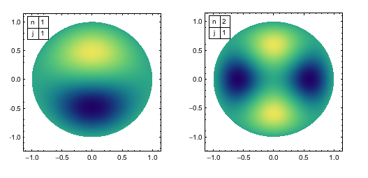
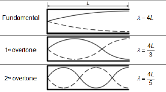

Radial Pressure modes visualized by thin film interference.
You can see the leftmost bubble change from one mode to another.

Longnitudal Pressure modes visualized through styrofoam debris.
The first mode of the standing wave can be seen here, along with an interference pattern.
